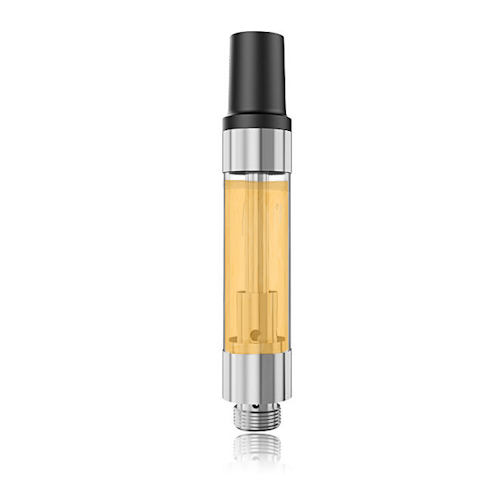

$25.00
Blueberry Muffin, also known as the plural “Blueberry Muffins,” is a tasty indica dominant hybrid strain created through crossing the infamous Purple Panty Dropper with the addictive Blueberry strain. The result is a bud that packs lifting effects and an insanely delicious flavor that is said to be just like a fresh blueberry muffin! The smell isn't something to sneeze at either – Blueberry Muffin has a rich frosty aroma of fresh berries and earth with a touch of nutty vanilla that becomes slightly pungent as the nugs are burned. The Blueberry Muffin high is just as delectable as the taste, with full-bodied effects that are perfect for any indica or hybrid lover. You'll feel the cerebral onset first as your mind lifts into hazy bliss that is soon wiped away and replaced with a mild sense of focus. As you start to become aware of random things around you, your body will start to feel tingly and numb as a body high makes its way from head to toe. These long-lasting effects in combination with its moderate THC level make Blueberry Muffin the perfect choice for killing the effects of chronic pain, anxiety or stress, nausea, and headaches or migraines. This bud has dense and heavy forest green nugs with bluish undertones, dark orange hairs, and a few scattered amber crystal trichomes.